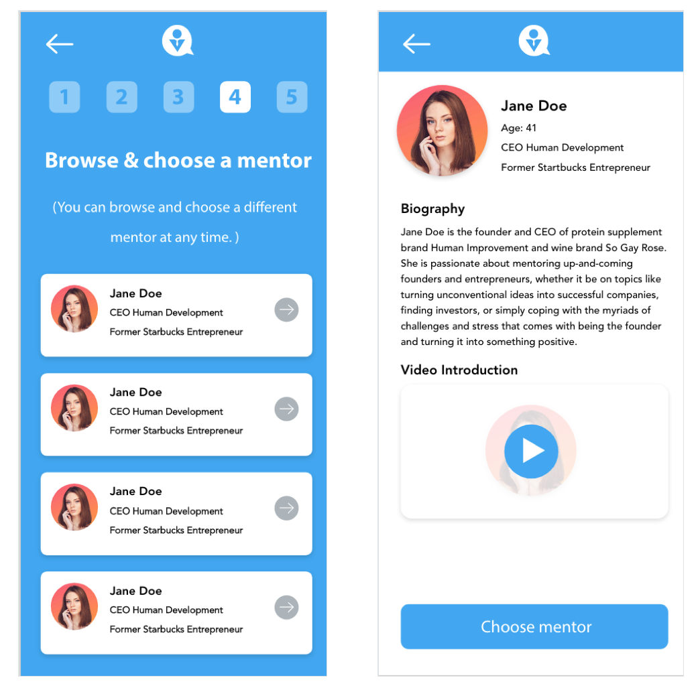
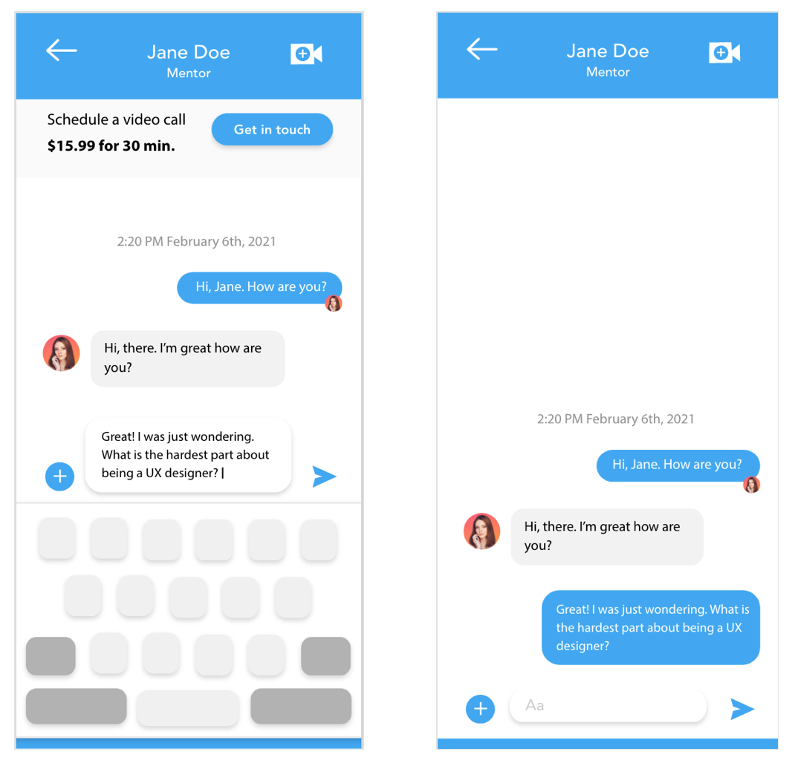
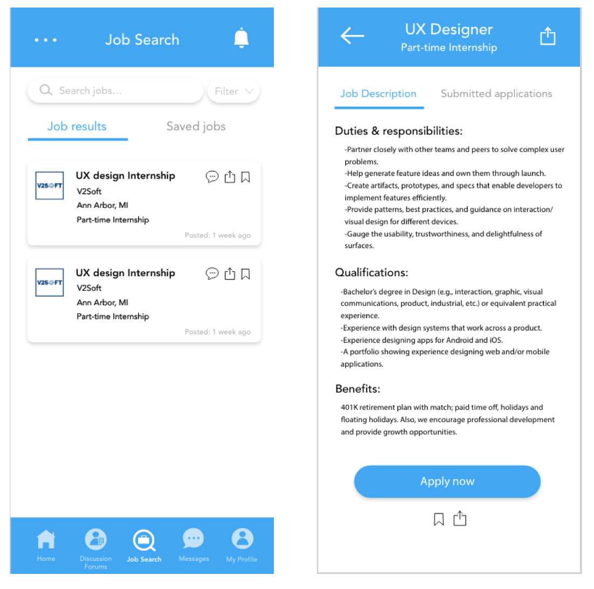
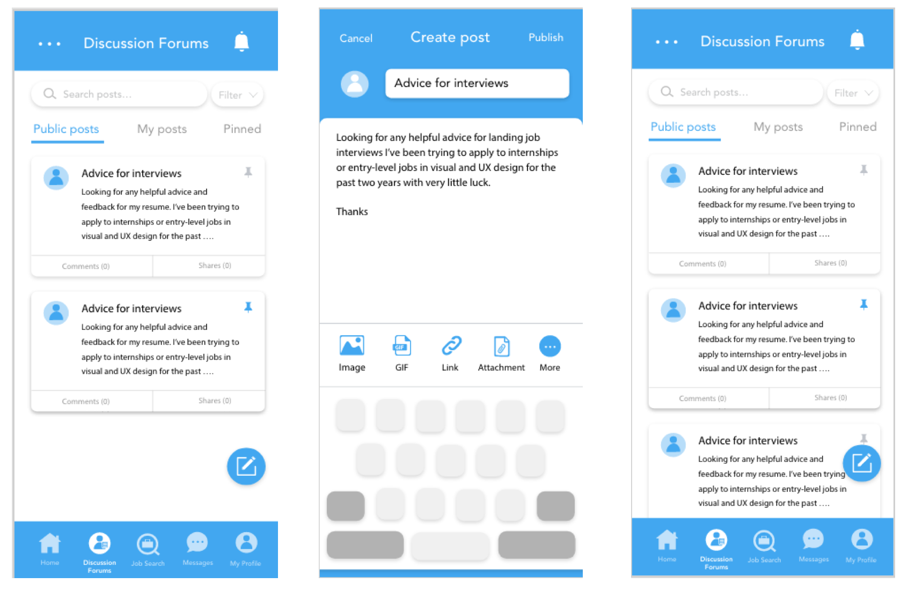

Abile Case Study

Problem Statement
It can be intimidating for students when deciding on a career path to invest a lot of time and money into. They may be feeling unsure or indecisive about whether a career field is a good fit for their skills and intersts.
Problem #1: Users may have a lack of of confidence going into the field of their choice
Problem #2: Users have an upcoming interview, but need insight
Problem #3: Users could be unsure of the field they would like to get into; they're seeking a career based on their skills, personality, and interests
Competitive Analysis
I analyzed some exisiting competitors like LinkedIn, Handshake, CareerBuilder, and Glassdoor to learn what makes their apps successful/unsuccessful for users.User Research
We conducted interviews with participants to ask them questions and gain insight on user experience with existing expert apps.These were the topics of discussion and the results recordered:
Sign up/sign in
- Sign in with social media account
- No subscription ads after sign in
Video calls/Live chat
- Suggestions on questions to ask mentor during calls
- Willing to pay for video calls
- Reminder for upcoming video calls
App Features
- Online discussion forums helpful for networking or ask questions
- Need a quick filter for job search
- Wants to upload resume/cover letter documents
The Solution
Choose a mentor: Match up with a mentor based on your career choice.
Live chat: Connect with your mentor and recieve career-related advice using the live chat feature.
Job search: Browse and apply for jobs or internships located anywhere.
Discussion forums: Network with peers, post questions, or receive resume feedback using discussion threads.
Wireframes
- Low-Fidelity Wireframes
- Mid-Fidelity Wireframes
- High-Fidelity Wireframes


Polished Design
Final Designs
Product Outcome
- Accessible menu that allows users to navigate the application
- A way to browse experts and pose questions in the messaging center
- Networking with peers through discussion forums
- An engine to search and apply for jobs or internships